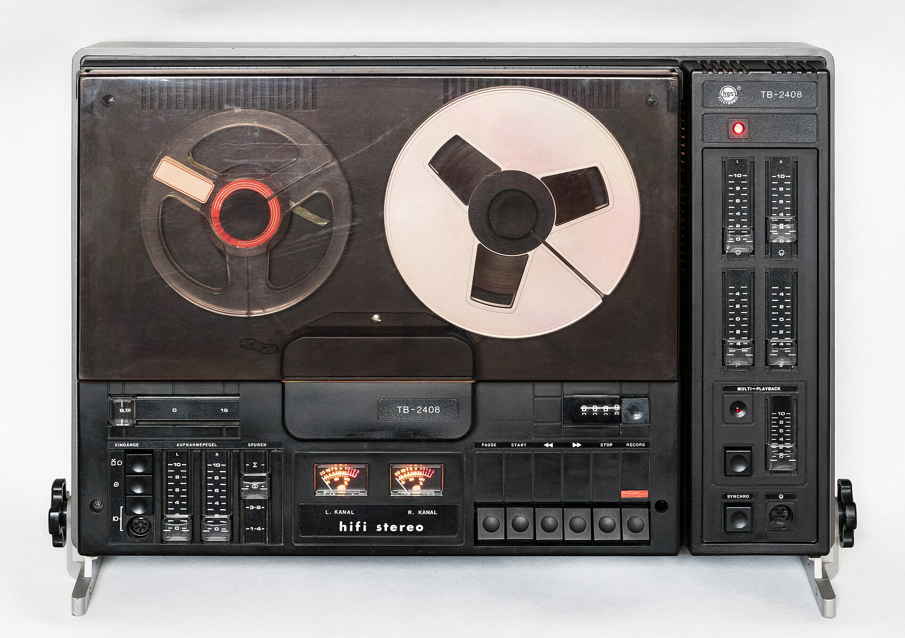
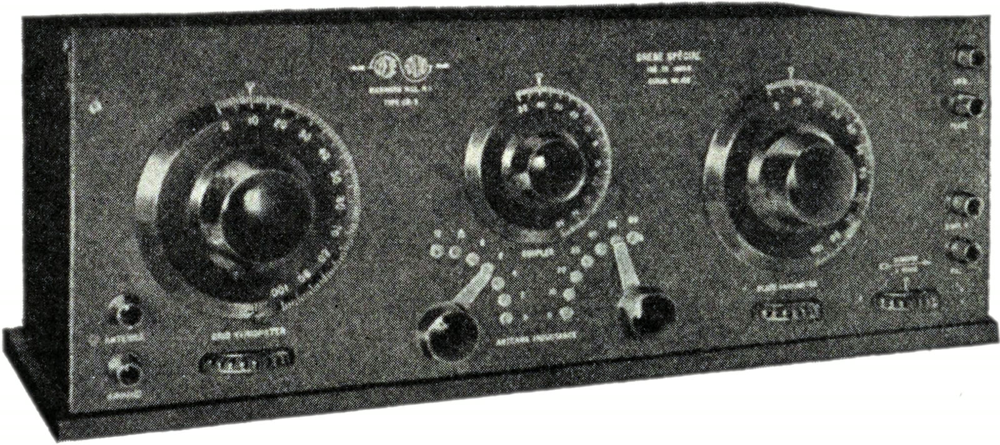
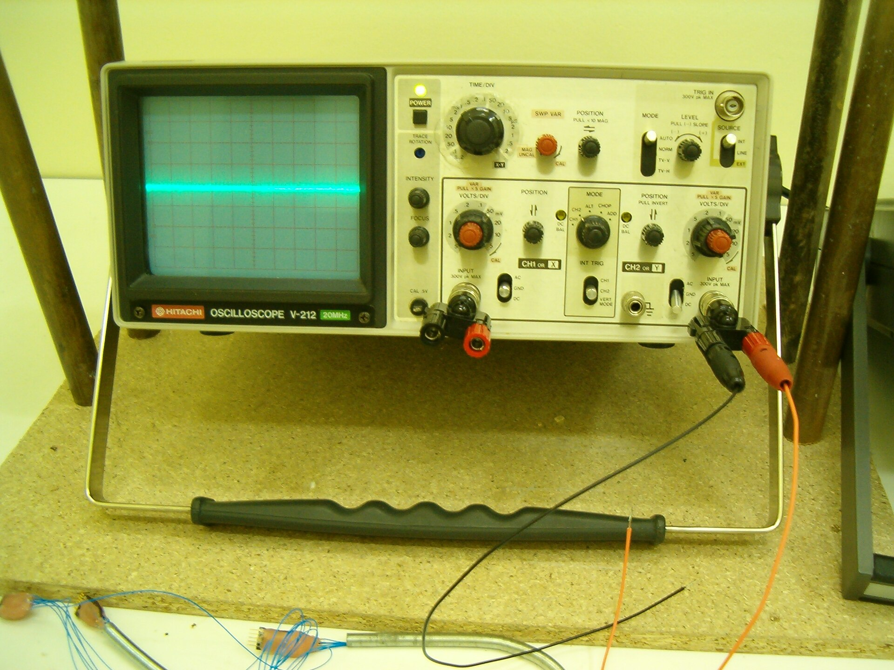
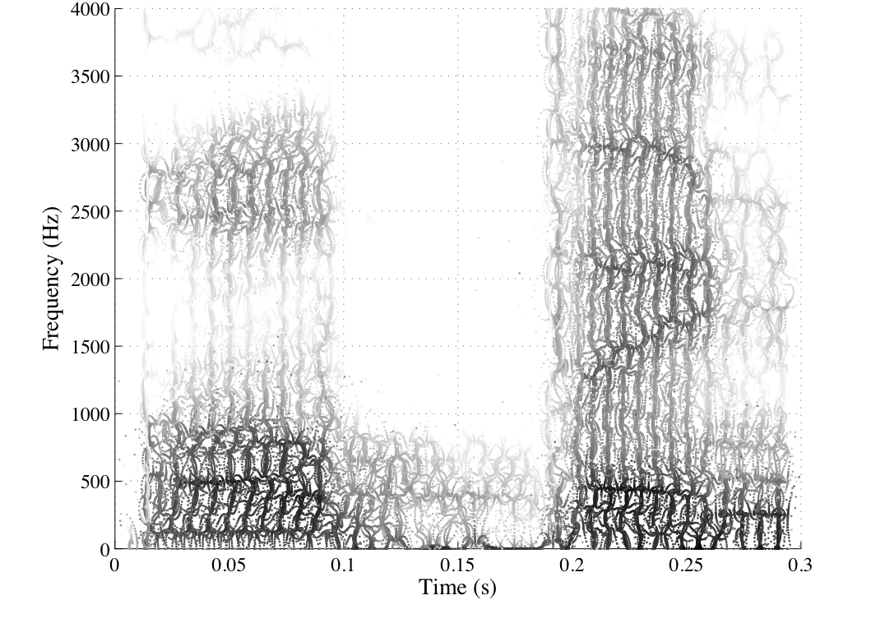

Whisper hearsvoices in noise.
Speech recognition is trained never to leave a pause empty. Switch off the filters that keep OpenAI's open Whisper model quiet, feed it 30 seconds of static, and it starts talking.

Voices in the static, again
From the 1950s, people left tape recorders running in empty rooms and tuned radios between stations, then played the hiss back listening for words. They called it electronic voice phenomena. What they found was the human ear filling noise with speech.
Whisper was trained on 680,000 hours of audio from the web, much of it subtitled video. Give it nothing to hear and it does what those listeners did, with more confidence: it writes down a voice. The weights are open, so anyone can reproduce this on a laptop. The training data is not, so why it says these exact words stays a guess.

Every clip said something
105 clips of generated noise, seven kinds, five seeds, three model sizes.

What it says most
Counted across all 105 clips. Most noise gets labelled Norwegian Nynorsk; the small model drifts into Welsh, Sinhala, Khmer and Georgian.
Who catches them
Six synthetic meetings with known pauses, transcribed the normal way. Then each judge marks the lines it thinks nobody said.
Cleaning a transcript
First, Whisper transcribes the meeting as usual.
Base model, its normal filters on. A fan runs under five minutes of talk with long pauses.
Then the rules strike the obvious ghosts.
Known sign-offs, sound tags, loops, wrong language, and lines Whisper itself thought were silence.
Then Gemma reads it like a person.
Gemma 3 4B, running locally, reads each line Whisper doubted, with its neighbours and any earlier line it repeats, and says why.

Run it yourself
pip install -r requirements.txt
python -m spiritbox summon pink
python -m spiritbox exorcise meeting.mp3Everything runs on a laptop CPU: faster-whisper for listening, Gemma 3 4B through Ollama as the witness. The census, the meetings and every verdict are in the repository.
This page uses the tiny model through transformers.js and judges with the rules only; Gemma's results above were computed offline.